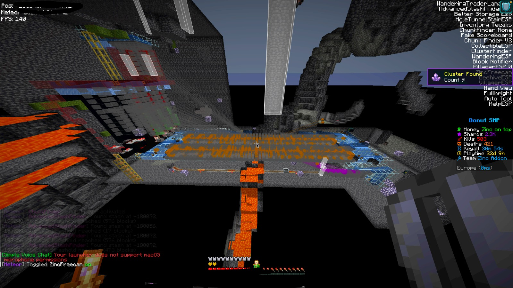
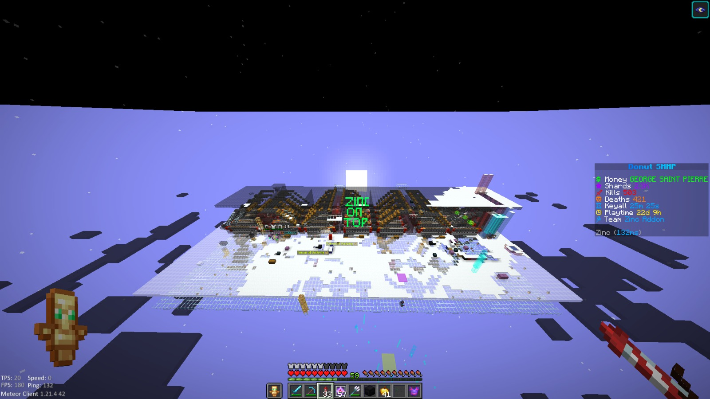
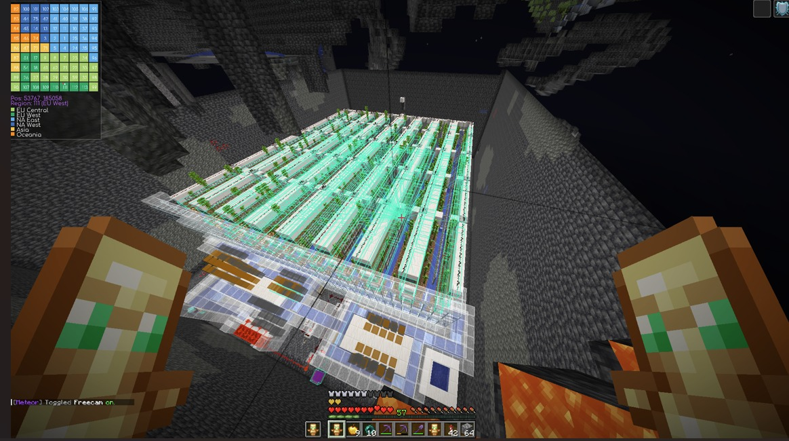
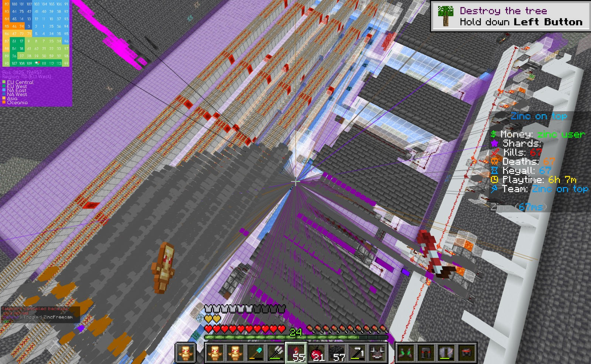

⌁
World Analysis
Surface useful locations, structures, paths, and underground activity with dedicated detection modules.
Zinc Addon is a Fabric-based Meteor Client addon with world analysis, visual utilities, macros, and server-focused tools in one streamlined package.
A focused addon experience for players who want useful information, clear visual feedback, and practical client-side utilities.
Surface useful locations, structures, paths, and underground activity with dedicated detection modules.
Use ESP, maps, crosshair options, particles, and HUD tools to make information easier to read.
Keep frequently used actions close with configurable movement, inventory, and server utility modules.
The full list is grouped by purpose so you can find the tools that fit your setup.
Browse the reference for an overview of available ESP, PvP, utility, render, and DonutSMP-focused modules.
Read the current module reference directly from the repository.
View MODULES.mdRecent world-analysis and infrastructure screenshots from the project gallery.

Base analysis
Infrastructure view
Farm & storage scan
Tunnel analysisUse Fabric Loader with Minecraft 1.21.11, then place the addon file in your mods folder.